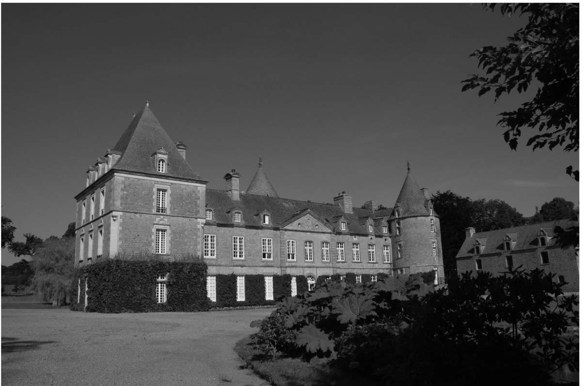
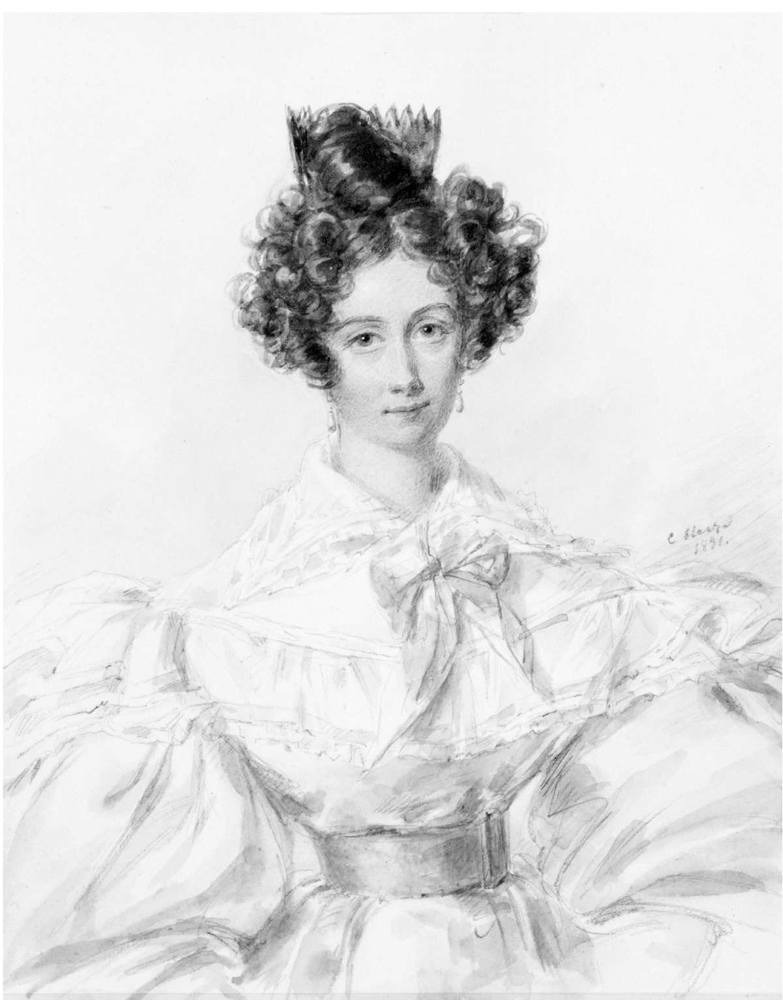
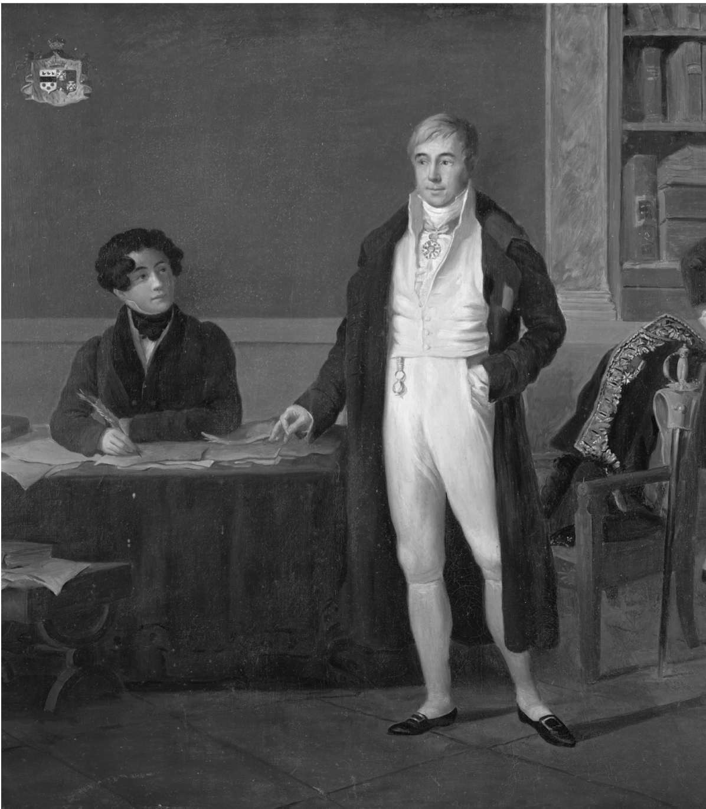

法国大革命之后不久，亚历克西·德·托克维尔出生在诺曼底的一个老式贵族家庭，他生于1805年7月29日，卒于1859年4月16日。他的出身注定他与旧制度脱不了干系，对自由的信仰又令他与新制度难解难分。他经历了民主降临法国的过程，预见其终将走向全世界。他家原本姓克勒雷尔，一位祖上曾在1066年与征服者威廉在哈斯丁斯并肩作战。整个家族分阶段获得了位于诺曼底托克维尔的封地，并在1661年以这一地名作为其姓氏。城堡至今仍在，托克维尔兄长的后人仍住在那里。

图2 诺曼底的托克维尔城堡。托克维尔生前就住在这座家族城堡中，但未留下子嗣继承这座城堡

图3 1830年前后，托克维尔的妻子玛丽·莫特利。她是英格兰人，新教徒，出身中产阶级。对一位法国贵族而言，这样的背景并非佳偶，但托克维尔写信给她说：“你是世上唯一能洞悉我灵魂深处的人”
亚历克西保留了他的贵族头衔，住在心爱的城堡里，但尽管他花费了大量时间和金钱来照料这座城堡，却未能留下一儿半女来继承它。这是个他并不感到遗憾的意外，他曾说过自己“并没有强烈渴求为人父亲的天降之喜” 。这种对于父亲身份的态度掺杂着好几种情绪：既有贵族对平民的轻视，也有对家族未来的民主式的漠不关心，还有哲学家的泰然处之。至于他的婚姻，就没有那么复杂，只是凸显了民主信念。他坦承自己娶了一位身份低微的非贵族英格兰女人（并无视某些家人的期望，非她不娶）。
托克维尔拒用伯爵的头衔，但并不排斥贵族出身的所有好处。他把这些有利条件都用于民主目的，即建设他所谓的民主“新世界”。托克维尔终其一生都是贵族，却一直致力于民主事业，并为此积极参与政治实践。在法国的“旧制度”，也就是贵族政治中，他本可以通过封建世袭制度来获取权力。托克维尔相信，从政就其本身的性质而言就是一种贵族行为，因为治理国家需要为他人负起责任，因而在地位上就要高于大众。他在君主制复辟期间首次从政的经验就带着一点儿特权意味，因为他的父亲埃尔韦曾任地方长官，在地方政事中十分活跃。正是在父亲的建议和影响下，亚历克西在1827年成为一名不受薪的法官助手。在那之后，他不得不参加多少有几分民主色彩的竞选。从这里可以看出他一直秉持的两条原则：在本质上属于贵族行为且起初也一直是贵族行为的政治应当民主化；以及从参政中学习政治，后一条恰是他在美国的民主中看到的独特优点。这两条原则之所以能够汇聚而不冲突，是因为只有当民主主义者尽最大努力争取在政坛上赢得一席之地，而不再听任政职理所当然地落在贵族政体之贵族成员的肩上，政治才能够实现民主化。托克维尔最伟大的远见之一，便是看出这一民主所必需的优点并非民主政体天经地义所固有的，事实上还有可能会受到威胁。
在托克维尔的时代，从政是一项艰巨的任务。法国大革命后，法国的政府一路蹒跚，从1789年之前的波旁王朝，即“旧制度”，转变为宪政共和；接下来依次是雅各宾派的恐怖共和；反对雅各宾派的热月政变；拿破仑帝国；波旁王朝复辟；路易—菲利普 [1] 的平民君主制；第二共和国，后者又被路易·拿破仑 [2] 推翻瓦解，建立了第二帝国。这样的动荡既让矢志从政的野心家屡屡涉险，又令心系政局的观察家痛苦不堪。对于像托克维尔这样的作家和思想家来说，这可算是最现成的理由，他完全可以借此告别政坛、遁世幽居，有足够的闲暇思考，以文章来施展其绝世才情。但终其一生，托克维尔对法国的一片赤诚从未动摇，他绝不放过任何一个参政的机会，纵使如此会妨碍他著书立说；1837年，他本可以撰写《论美国的民主》第二卷，却在路易—菲利普政权的众议院参加竞选。那时他身为贵族在自己的领地参选，但第一次仍然失败了；1839年他带着民主的决心再度果断参选并取得了胜利，随后又连任了两届。1848年，路易—菲利普的君主政体垮台之后，托克维尔被选入旨在建立第二共和国的制宪议会，参与制定宪法。后来他又入选了根据该宪法成立的新议会，在外交部部长任上履职五个月，直到新总统路易·拿破仑解散了内阁。1851年12月，路易·拿破仑发动政变，结束了共和政体，托克维尔这才彻底告别政坛，于他而言，如果说此前参政是遵循道义，那么继续置身其中就是不讲原则了。他最后的政治经历是被路易·拿破仑当作抗议代表，关了两天班房。
究竟是什么让这位天生的作家投入到连他本人都怀疑能否成功的民主政治呢？在托克维尔看来，如果没有政治自由，就不可能有充分的写作和出版自由。他希望通过担任政职来亲身感受那种自由，而不满足于做一个旁观者。像理论家那样超然世外根本无法深入了解事物。哲学传统声称人可以通过冥想获得灵魂的满足与平和，他认为那是不可能的。他认为，人的灵魂，尤其是他自己的灵魂，是“桀骜难驯、贪得无厌”的。他鄙视“世间一切的善”，又须诉诸那些善，来逃避灵魂在试图自省时所感受到的那种“可悲的麻木”。首善当属名誉，这是他的“天然品位”，有了它方能成就“伟大的行动和伟大的美德”；所有其他的善均等而下之，不过是获得名誉的诸般手段而已。托克维尔有意、故意、刻意地希望并竭力使自己的生活与众不同，他不屑于沽名钓誉，又渴望能名满天下。
看来根据托克维尔的理解，要想声名显赫名垂千古，本质上定须参政 ——治国，而不能仅靠彰显自己的文学天分和智慧来获得大众的肯定。然而他又认为自己“是个更杰出的思想家而非行动者”，且这个看法显然是正确的。作为政治家，他缺乏平易近人的品质，他对此也了然于心。他（在其《回忆录》中私下）承认自己不得不在国民议会与庸众打交道，却几乎记不住他们的姓名和模样：“他们使我感到非常厌烦。”他还说过，写作是一种行动，是一种参政方式。看来托克维尔认为政治自由有两个分支 ——担任政职和写作，伟大之人当二者兼备。
对哲学家，或者说对大多数哲学家而言，人伟大与否只是件小事，那不过是人的自我膨胀，与永恒相比，注定将黯然失色。托克维尔却不以为然。“我的想象，”他在一封信中写道，“可以轻而易举地攀上人之伟大的巅峰。”他并非自诩为另一个亚历山大大帝，而是不满足于自己曾孜孜以求的世俗名誉，却又不敢肯定上帝保证了人类也一样可以伟大。他的灵魂桀骜难驯，藐视世俗自是贵族的傲慢，但同时也有承担政治角色的民主责任，毕竟在民主制度下，贵族阶层已经无力担此大任了。
虽败犹荣是政治家托克维尔的最佳结局，他的余生则必须被视为他作家生涯的波澜起伏。的确，他最精彩的政治经历不过是观察并记录了法国大革命后接踵而至、分别发生在1830年和1848年的两次革命。1830年，他作为一名法官，必须决定是否应向奥尔良王朝的新国王宣誓效忠，抛弃正统的波旁王朝后嗣 ——他正是这样做的。1848年1月，他发表了一次演说，提醒政府注意即将发生的革命，但即使身为下议院成员，他所能做的也只是提醒而已；他被迫眼看着第二共和国诞生而无能为力，只能对其社会主义前景抱着深深的担忧。1850年，就在患上了最终令其撒手人寰的肺结核时，他写下了关于那次革命的《回忆录》；他说那不过是“白日做梦”，本是写给朋友看的，最终或许能够出版（结果直到1893年才得以面世）。彼时民主革命就在附近如火如荼地进行，那是他倾注一生心血的研究课题，而他所能做的不过是观察和写作。但他所做的产生了深远的影响。
托克维尔的启蒙恩师是勒叙厄尔神父，此人也曾是他父亲的私人教师。除老式的宗教训导外，勒叙厄尔在其他方面对他溺爱有加，两人遂成为密友。托克维尔16岁时，还在梅斯 [3] 的地方长官任上的父亲把他送到一所学校去学习修辞学和哲学。据托克维尔后来回忆，他就是在那时走进父亲的书房，阅读了一些哲学书籍，在他心里引发了一场“地震”，一种“普遍的怀疑”穿透了他原本充满虔诚信仰的灵魂。他后来一生都在与这种怀疑搏斗，它不仅动摇了他对上帝的信仰，也摧毁了他为自己的信仰和行为所构建的“全部真理”的“理智世界”。

图4 1822年，十六七岁的托克维尔坐在书桌前，站在桌旁的是他的父亲埃尔韦·德·托克维尔
托克维尔的父亲无视儿子灵魂中的这场地震，送他去巴黎学法律，从1823到1826年，他都在学法律。两年后，他选修了后来出任法国总理的弗朗索瓦·基佐的课程，所做的笔记显示，基佐关于人类历史或称“文明”的思想让他颇有感触。在当时的一封信中，他曾提到基佐的思想和著述都“非同凡响”。基佐和邦雅曼·贡斯当二人都是法国19世纪初期伟大的自由主义者，人们常常把托克维尔与他们相提并论。但与托克维尔颇不相同的是，这两位认为，自由主义可以抑制民主而无须与其妥协。无论托克维尔从他们那里学到了什么，都没有让他得出这一主要结论。不过这倒是他在课堂上接触同时代最前卫的自由主义思想的一段插曲。
然而，托克维尔的教育大多还是靠自行阅读当时的历史学家和政治哲学的经典著作。他偏爱法语作品：“我每天都要和三个人相处一会儿。”他在1836年这样说道 ——他们是帕斯卡、孟德斯鸠和卢梭。但除了阅读那些作者的著作之外，他还与朋友们频繁通信，在启发朋友的过程中自我教育。这些朋友包括文人学者让—雅克·安培、社会理论家阿瑟·德·戈比诺、英国经济学家纳索·西尼尔、政治家皮埃尔—保罗·鲁瓦耶—科拉尔，他的挚友弗朗西斯克·德·科尔塞勒、索菲·斯韦特切尼夫人、阿道夫·德·西尔库尔、欧仁·施托费尔斯，以及他自幼便结识的好友路易·德·凯尔戈莱。
托克维尔与居斯塔夫·德·博蒙的友谊尤其值得一提。他给博蒙写过的书信集结起来长达三卷，也正是与博蒙同行的为时九个月的美国之旅（1831—1832），让他写下了《论美国的民主》。他们曾一起学习法律，在同一个法院担任法官，还在那次著名的旅行之前，一同选修了基佐的课。他们想去美国看看“伟大的共和国是什么样子” ——托克维尔在一封信中这样写道，显然在行前，他们关于此行的模糊想法是两人联合起来做些什么。他们更明确的计划是要写一本关于美国刑罚改革的专著。虽然（托克维尔曾私下里对凯尔戈莱透露）那只是个“托辞”，但两人在从美国返回一年之后，的确就此专题出版了一本著作（即《合众国的监狱制度及其在法国的应用》）。他们在这本书中对改革赞勉有加，又批评了改革者的过高期许，这多少可算是典型的托克维尔式自由主义。
托克维尔和博蒙游历了当时的大部分美国领土。他们从纽约出发，向北穿过布法罗抵达五大湖地区，如此就到达了当时的边境密歇根州和威斯康星州。所谓“边境”是指大自然与文明的分界线，托克维尔在“蒸汽船上”写作，寥寥数笔就精妙地描画出大自然的静谧，并就文明展开了不同层面的讨论；他比较了美国人与英、法两国人，将印第安人看作身处化外且对文明怀有敌意的人。于此完成的《在野外的两周》（1831，托克维尔时年26岁）一书是为出版而作，但直到他去世后才得以面世。
托克维尔和博蒙两人在旅行期间都坚持写日记，虽然托克维尔的日记以《美国游记》之名出版，但这本书和《在野外的两周》一样，不过是些彼此无关的、为后期著作而记录的笔记，缺乏编排。从旅行中的某一时刻起，两人合写一部关于美国这个伟大共和国的著作的计划变成了托克维尔一个人的事，人们不禁猜测这可能自始至终都是他的意图。他们考察了边境（他们认为那不过是一条暂时的边境线，不延伸到太平洋决不罢休）之后就去了加拿大，然后南下到波士顿、费城和巴尔的摩，随后又向西去了匹兹堡，向南到访了纳什维尔、孟斐斯和新奥尔良，从那里穿过佐治亚州和南北卡罗来纳两州，到达华盛顿，最后回到纽约并启程返回法国。他们一路乘坐蒸汽船前行，每到一处便找一座小木屋住下。他们与安德鲁·杰克逊总统有过短暂会面，并与很多美国人展开长谈，其中既有名人，也有不那么出名的普通人。托克维尔的调研方法是提出适合受访人回答的问题，倾听、探究，寻找真相和见解，而不是像现代社会学家那样，就人们对同一套问题的回答进行统计。
《论美国的民主》上、下卷分别于1835和1840年出版面世，其间相隔五年。上卷更多谈及美国及其优缺点，出版后即引起了巨大轰动，而下卷对于民主的实测分析和对其未来的预言却反应寥寥。夏多布里昂和圣伯夫等伟大的法国作家对本书上卷大加赞扬，使得托克维尔声名大震，誉播遐迩。1838年，他当选为法兰西人文院 [4] 院士；1841年，他年仅36岁即被选为法兰西学术院 [5] 院士，那是他主要的社交场所，特别是在政治生涯结束后，路易·拿破仑当权的那段时期。1852年，他在法兰西人文院开办了一场关于政治学的讲座，把该学科与“治理之术”区分开来，因为政治学的重点在于思想的逻辑，而不是治理所必需的那一套枯燥说辞。但托克维尔的政治学是对那些枯燥说辞加以提炼来建立其逻辑的，而不是像自由主义理论家那样一味地反对和驳斥它们。
美国并不是托克维尔唯一的旅行目的地。1827年，他曾在西西里旅行，随后撰写了他的第一部作品。美国之行后，他在1833年去了英格兰，1835年再次到访英格兰和爱尔兰；怀着对自己在美国见到的政府行政分权的充分兴趣，他渴望在这个欧洲最自由的国家看到民主的进步，还试图研究英国与法国贵族政治的差异。他还曾去过瑞士（1836）和阿尔及利亚（1841和1846）。他撰写了关于贫困（《济贫报告》，1835）、奴隶制和殖民地的报告。1850年退出政坛后，他着手撰写关于法国大革命的著作，这是他多年深思熟虑的主题。他在有生之年未能完成整个计划，但在1856年发表了第一部分 ——《旧制度与大革命》。这将会是一部“伟大的作品”，他在致凯尔戈莱的信中写道，是一部“哲学史与历史适时展开对话的综合体”，将为“我们的现代社会”及其可能的未来提供一个广义的判断。他声称自己“除追求自由和人的尊严之外绝无其他动机”。他远离政坛却并未弃绝政治，既是研究历史也在教授哲学。